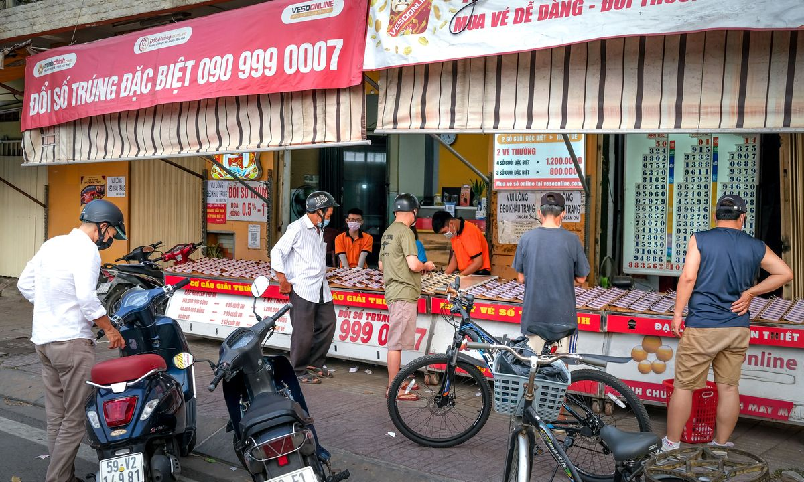
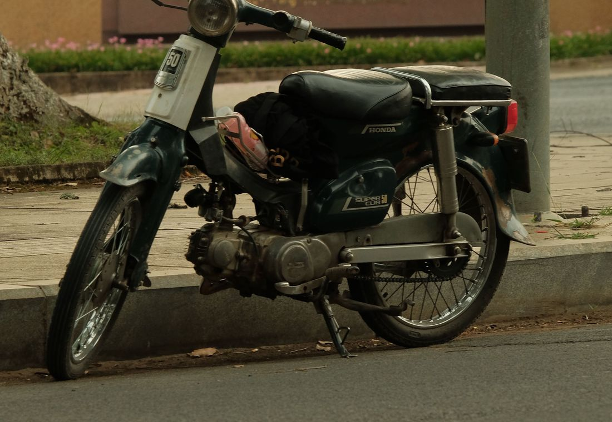
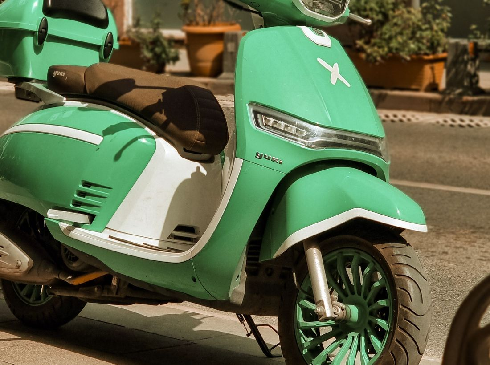

Once you decide to buy a bike in Nha Trang, options pile up fast: street resellers, classifieds, Facebook groups, rental shops, dealers. The catch — it’s easy to end up with a worn-out or stolen bike with bad papers, and then face fines and headaches. Here’s where to look safely and where not to.

Street resellers with no papers. Often worn or stolen bikes. The classic red flag is “sai số máy” (engine number doesn’t match the papers) or no cà vẹt (registration) at all. With such a bike, “no licence” turns into a police problem.
Suspiciously cheap listings. A price well below market is almost always bait: dead engine, hidden loan (trả góp) or stolen. Cheap ≠ lucky.
Rental shops offloading a tired fleet. Bikes worn out in rentals often get sold as “almost new”.

Simple rule: buy where they give you clean papers, a check and a warranty — not a “trust me” from the street. A good seller calmly shows the cà vẹt, lets you start and inspect the bike, and doesn’t rush you.
Our way. We bring bikes from a trusted Hanoi dealer, all checked against the police database (not stolen, clean papers), service them, prepare a document folder, give a warranty and a 50% buy-back. So you buy a clean bike with service, not a pig in a poke off the street.
Don’t chase the cheapest hand-to-hand deal — that’s the fastest way to buy junk or a stolen bike. Get a bike with clean papers and a warranty, and “50cc, no licence” stays true, not a surprise. How to check — see licence & police and bike types. How buying works with us — here.